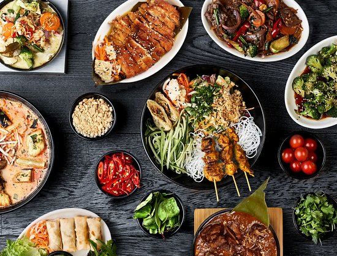
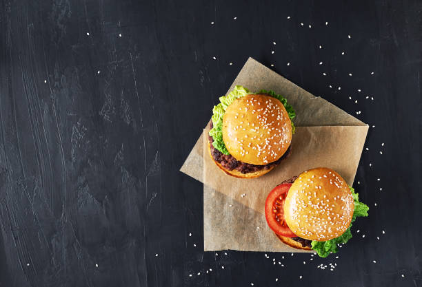
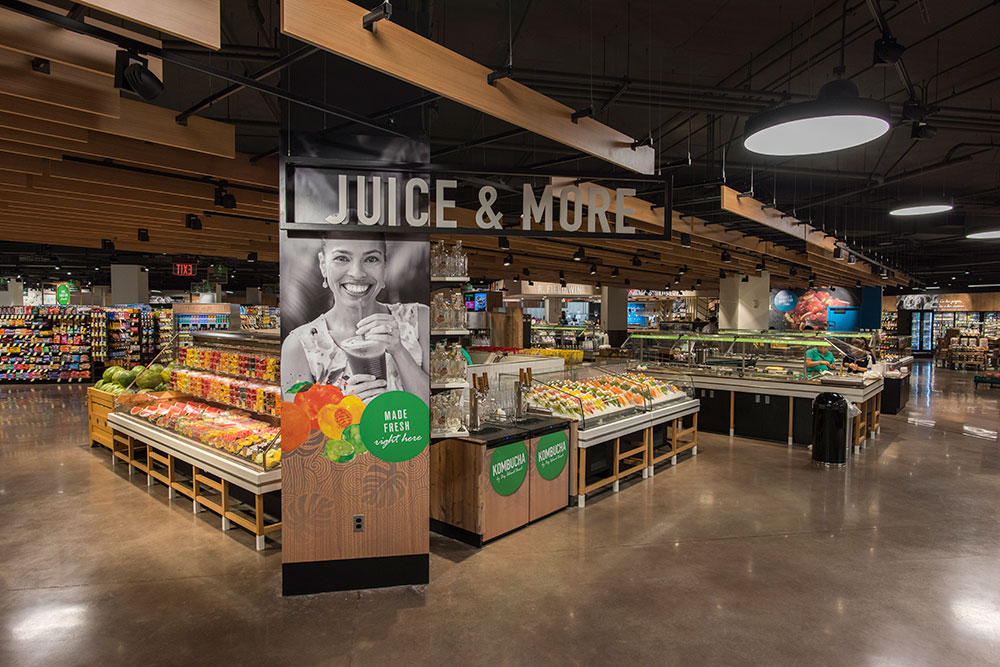

Discover the Flavors of Taniti Taniti offers a vibrant dining scene that caters to all tastes.
Whether you are looking for an authentic taste of our Pacific heritage or familiar comforts from
home, our culinary landscape has something for everyone. From casual beachside eateries to
family-friendly restaurants, dining in Taniti is a journey into local culture.
We understand that traveling can make children or adults crave home cooking. We offer a
selection of American-style meals and Pan-Asian cuisine to ensure everyone in your party finds
something to enjoy. See our options listed below:
Please note that alcohol cannot be served or sold between the hours of midnight and 9:00 a.m. and the legal drinking age is 18.

For travelers who wish to prepare their own meals or stock up on supplies during their stay, Taniti provides a reliable network of retail options located primarily within Taniti City and the Merriton Landing area. Visitors can access two large supermarkets alongside two smaller neighborhood stores for all essential groceries. For those who may have unexpected needs late at night, the island also features a dedicated convenience store that remains open 24 hours a day, ensuring you are never without essentials. Payment is made easy as most establishments accept major credit cards, and while the U.S. dollar is the primary currency, many businesses also welcome Euros and Yen. Additionally, since power outlets use the standard U.S. 120-volt system, no adapters are required for your personal electronics, allowing you to shop with total peace of mind.